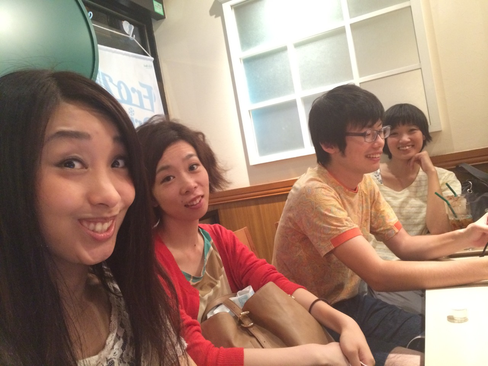

MV
LYRICS
DODODO
作詞・作曲 さわいかん
演奏 deronderonderon
You may mind that life is over
「ガラクタ」よりもガラクタな人が多いような
You may think that life is over
群れるビルディング
価値無いテレビジョン
からだ揺らして
I wanna brake you to love you much.
so DO! so DO!
I wanna brake you to love you much.
so DO! so DO!
愛は無かったんだ
とんだピエロになったんだ
I wanna kill me tender.
You may mind that life is over
言葉をとって 非力をとって
暴力は捨てて
製作チームINTERVIEW
ヨネエリ×みんなうそつき×deronderonderonさわいかんで座談会をしてみました。
残りものでくっついたんですー。ふふふふ笑
さわい：じゃあ、よろしくお願いします。
さわい ：では今回はですね、DODODOのMVの撮影でヨネエリお二方と、みんなうそつきのお二方に集まって頂きました。
全員：わー（ぱちぱち）
さわい：まず、ヨネエリの自己紹介をお願いします
ヨネ： ヨネエリの”ヨネ” 米田です。ヨネエリっていうのは、ダンスデュオです。米田沙織と升水絵里香の二人のダンスデュオなので、ヨネエリって名前です。
西川：よっ！よっ！ヨネエリ！
さわい：これも文字に起こすで？笑
全員：あははは！
西川：ガヤいらない？笑
エリ： ガヤガヤ笑 ヨネエリはー、まぁあんまり仲良くなさそうな二人が、何故かたまたま踊ってるっていう…ダンスデュオです笑
西川：あはは
さわい：なるほど。
ヨネ： そうですね。
エリ： 西川くん失笑してるよ笑
さわい：じゃあ話を進めたいので次、みんなうそつきの…
エリ： みんなうそつきの自己紹介はー？ちょっとそれを踏まえてちょっとやり直すわ、テイク２やる笑
西川：テイク２？
エリ： うん、おっけおっけ！どうぞどうぞ！
西川：えー、みんなうそつきから来ました、西川達郎です。（無駄に低い声）
さわい：はい。
乙女：乙女です。
西川：（無駄に低い声）えー、みんなうそつきは、映像制作チームとして…
乙女：めんどくさいなあ笑
西川：え、めんどくさい？笑 いい声で言った方が聞き取りやすいかなーって思って笑
エリ： あーそっかそっかそっか
さわい：大丈夫だよ笑
西川：大丈夫かな？笑（元の声に戻し）みんなうそつきは映像制作チームで、ジャンル問わず色んな映像を手がけていまして。deronのMVを作るのは、かれこれ４本目？過去の１本や２本はとりあえず置いといて。今回のアルバム全曲MV化プロジェクトからだと・・・
さわい：今回のMVのプロジェクトの中やったら２本目やね。"wall off"に続き。
乙女：そうですね。
西川：映画やMVや、舞台とかのプロジェクションなどなど。色々やってる映像チーム。それがみんなうそつき！キリッ
さわい：はい。(スルー)
エリ： なんで”みんなうそつき”になったんですか？
西川：それは秘密です。絶対言わない
エリ：ヨネエリは、いつのまにかヨネエリって呼ばれるようになりました。
ヨネ：そう。みんなにヨネエリヨネエリって
さわい：へーそれでもう自動的に？
エリ：ヨネエリ以外無いねってなって。
ヨネ： 他の名前をわざわざ付けたってみんなそうやって呼んでくれないよって言って笑
西川：エリヨネの可能性は無かった？
エリ： １回ね、エリヨネって言ったけど、「あっ、無いね」ってそっこー却下されました笑
さわい：あれですよね、ドリフターズ・・・
エリ： そうそうそうインターナショナル？
ヨネ： サマースクール。ドリフターズインターナショナルが主催している、夏のワークショップの第一回目のダンスのコースの時に、えーと…
エリ： 残りものでくっついたんですー。ふふふふ笑
ヨネ： そうそう。創作をしようみたいな。
西川：ちょいっちょいネガティブな情報が…笑
エリ： ふふふふ笑
ヨネ： そう、なんかね、グループで誰かと組んで創作する。みたいなのがあったんですけど、それで、最後に残った二人が私たちだったんです。で、私たちのシーンをつくる時に「ヨネエリのシーン」「ヨネエリのシーン」って言うから、ヨネエリっていう名前になりました。
友達があの曲を聴いて、「１０分くらいに感じた」って笑
さわい：賑やかな自己紹介ありがとうございます笑 今回の曲のDODODO・・・”どどど”って読むんですけど、DODODOを初めて聴いた時どういう印象を持たれましたか？
西川：deronの中ではタイト目な感じの曲かなっていうイメージがあって、歌詞は相変わらずの毒気のあるderon節で、曲調としてはすごい躍動感があるよね。ライブで映える速そうなタイトな曲だなっていうイメージはあったね。
さわい：なるほど。乙女ちゃんはー？
乙女：いつも通り突っ走ってるなっていう印象だよね。ライブで聴きたいなって思った。
さわい：あはは笑 ライブでは数回くらいしかやってなくて。そろそろドンドンやりたいなーって思う
乙女：すっごい猛スピードでやって欲しい。
さわい：あー猛スピードでね。
西川：倍速くらいで。
さわい：速かったら…死ぬ…あっメンバー死ぬなぁ笑 じゃあ米田さんはどう思いました？
ヨネ： なんかすごい疾走感っていうか駆け抜ける感じがある曲だなーっていうのをイメージした。多分一番最初に話したときに、みんなで話した記憶があるんですけど。あとね、なんか。歌詞の部分もいいんだけど、間奏が結構好き、好きだなぁ。好みだった。っていう。
西川：好みの理由は？
ヨネ： ちょっとポップな感じの部分が曲の大きな流れからちょろっと外れたところにあるなあって。そういう一癖あるのが好きだなあって思いました。
さわい：なるほど。ありがとうございます。エリカさんの方は？
エリ： わたしはなんだろう。えっ最初あれ最初聴いたのいつだっけ？
西川：打ち合わせの時じゃない？
エリ： 年末？
ヨネ： １２月くらい。
エリ： 「わかってるな」って思いました！
さわい：どゆこと？
エリ： あーこれヨネエリに持ってきたかーみたいな。
さわい：あっそういう感じだったんですか！笑
エリ： ３月ぐらいまで”どぅーどぅーどぅー”かと思ってた笑
西川：思ってた！”どどど”って知らなかった！曲中で”どぅーどぅーどぅー”言ってるし、”どどど”とは言われるまでわかんなかった。
エリ： だんだんそう。「あっ、”どどど”って言ってる」って思った笑
さわい：”どどど”って、いいます。
エリ： あっ、出だしが好きです。
さわい：ありがとうございます。
エリ： 間奏いいよね。歌詞もいい。好きだけど。…間奏長くない？deronderonderonの曲って。
さわい：あははは笑
ヨネ： そ、そうだね。間奏長い笑
さわい：間奏長い？笑
ヨネ： 他のなんかさ、AメロとかBメロとかあるじゃん、こういう節みたいな。そういうのを分解してつくろうってなったんだけど、全然ねぇ、その仕組みがねぇ、読み解けないっていう・・・笑
さわい：あははは笑
エリ： そうそうそうそう！
西川：サビって１回だけだっけ？
さわい：サビ１回だけっす。
西川：だからだよねー、多分。サビ１回しか無いからさぁ、ちょっと変則的に感じるんだろうね。
エリ： そう、変則的なの多いよね。
ヨネ： そうそう、そういうのが多いなー。
エリ： その変則的で間奏長いところがイイ！！まぁでも面白い、それは。やりがいあります。
さわい：あの曲は・・・よくわかんないっす。友達があの曲を聴いて、「１０分くらいに感じた」って笑
全員：笑
エリ： 確かにねー３分って感じじゃない。
西川：変則的な曲ってderonの特徴なのかな？
エリ： あーうん思った。
さわい：まあそうかも。
エリ： カウント数えるとき途中でさぁ、なんか・・・わけわかんなくなるよね？
ヨネ： ここで６入れて、１、２、３、４、５、６、７、８・・・
エリ： ダンスは８カウントでつくるからさぁ。
ヨネ： そうそうそうそう。
さわい：そうっすね。この曲は他の曲よりも更に特殊かもしれないです。
エリ： へー。へえへえへえー
さわい：へえへえへえーへえへえへえへえへえー

メンバーが増えたり減ったりするから絵コンテとかも「誰が出るんだっけ？」みたいな。
さわい：「ヨネエリと一緒にMVを作りたい」って西川君に言ったのは去年の１０月か１１月くらいかな？
西川：そうそうそう。秋か冬か。
さわい そこからなんやかんやで撮影が春になった。
エリ： 長かった道のりだね。
ヨネ： そう。すごい道のり長かった。
西川：長かったね。
かん 色々あった笑
西川：半年かけて撮った笑
かん 色々ありましたねーこの半年間。deronも色々変化を迎え…。
ヨネ： メンバー増えたよね。
かん そう一番の変化笑
ヨネ： 年末は知らなかったけど、撮影の時には増えてた。
西川：メンバーが増えたり減ったりするから絵コンテとかも「誰が出るんだっけ？」みたいな。「あっ増えたんだ、新しい人また書き入れなきゃ」みたいな。そういうのがねぇ、deronderonderonには…ある。笑
さわい：ははははは！笑
エリ： Wall Offの時はー？
さわい：Wall Offの時は４人で、その時のギターのホリタ(カラシゴロシ)はもう抜けてて
エリ： あーそっかそっかそっかそっか。
ヨネ： ばっしー。
さわい：今ばっしー。
西川：撮影の度に新しいバンドでやってる様な笑
さわい：ははは笑 でもね、５人での撮影は結構新鮮やった。
さわい：改めて、今５人おるんやーっていう。嬉しさ、みたいな。で最初の撮影がnitehi works。
西川：そう。nitehi worksでやらせてもらいました。
さわい：そもそもnitehi worksについてあんまり分かってないんやけど、どういう場所なん？
西川：nitehi worksは、横浜の黄金町駅近くの若葉町っていうところにある、古ビルをリノベーションしたアートスペースで、そこにアーティストやデザイナーが滞在して制作しながら交流したり、周辺の町の人達と共にイベントをしたり、そういうことをしてる場所だね。
エリ： おしゃんてぃーカフェ＆バーみたいなね。寒かったねえ～！
ヨネ： すっごい寒かった！３月の末とかだよねあれ？
乙女：や、撮影は３月頭やなー。
西川：最初に３つのロケーションで、撮影をしようという風に思っていて。。。おっ、ちょっと内容にやっと入ってきた笑 ３つの場所を場面転換しながら進行していくっていうアイデアが最初にあって。始めは室内、次にちょっとひらけた街の中とか…人が居てちょっとビルがあってみたいな場所。そっから、更にもっとひらけた公園だったり。 今回だったら最後はあの河川敷だったんだけど。ああいう場所に徐々に踊りながら展開していこうっていう構成が出来て。それで始めの室内をどうしようかと考えた結果、nitehi worksになったんだよね。
さわい：nitehiって名前はよく聞いてたけど、実際行ってみると空間としてすごいおもしろかった。
西川：nitehiの空間のイメージは、ヨネエリの「嗜好品」(さわいが音響で参加したヨネエリのダンス作品)という作品の時の舞台空間のイメージと重なってるのが結構あるかも。
ヨネエリ： あぁ～。
西川：今思うと。うん。
さわい：うんうんうん。
西川：（嗜好品の舞台空間は）グランドピアノが唐突にぽんっと空間の真ん中にあって、お洒落って言うと雑な言い方だけど。なんていうんだろうな、不思議だけど品があるというかなんていうかこう。
ヨネ： 結構整った空間だったよね
西川：そういう綺麗で不思議な空間、というイメージがヨネエリの作品にはある。今思うと、それがnitehiと噛み合うんじゃないかなって。
ヨネ： あーうんうんうんうん。
西川：そして撮り終わった後に映像見ながら「やっぱり、ヨネエリの２人とnitehiはマッチしてるなー」って思いました。
さわい：なるほど。
ヨネ： そう、すごい天井が高いところで踊れたのがすごい嬉しくって。
さわい：あぁ～そうですね、すごい天井高くて気持ちよかったですよね。
ヨネ： そうそうそう、色んな視点で見れる。見れるというか見てる人が居るし。
西川：nitehiは天井にプロペラがあって、それを回して風が２人に当たるようにしてたんだけど、あまりにも設定を強くし過ぎて風が、もうウワアーって巻き起こって、髪がウワァー巻き上がって、カメラはウワァー揺れてるみたいな。笑
さわい：冬だから風ウワァーで寒いかったし笑
一番最初に「”映像でダンスを撮った時”に一体どういうことが出来るのー？」ってヨネエリから聞かれて。
さわい：次の撮影場所が、池袋。
西川：最初は、池袋の街の中、ほんとに駅前のビルが沢山あって人ごみがあってっていう場所で撮ろうとしてたんだけど、結局やっぱり色々難しいなと。どこか代わりに良い場所ないかって探してた時に某大学のキャンパスの中がとてもいい感じで。レンガ造りでおしゃれーなキャンパスでね。
エリ： おしゃんてぃ。おしゃんてぃーキャンパスライフの中で。
西川：これまたヨネエリに合うね。
エリ： いろいろな意味でとても頑張りました。
西川：あはは笑
でもnitehi worksと場所の繋がりとしては流れが良かったね。
さわい：そうあの切り替わりのシーンがすげえハッ！てなる。
西川：そこね。場面転換をするっていうアイデアの中に切り替わりのところをダンスの動きによって唐突に替えたいっていうのがあった。
っていうのは例えば、時間の流れ、物語の流れで場面が切り替わるとか、脚本上のセリフの展開で切り替わるとか、一つの作品の中で場面転換をするために、ある程度必要な要素や条件というのが基本的にはあるんだけど、それを、今回はダンスがメインだから、動きで場面を繋げる。
もちろん音楽がバックに流れてるっていう条件の中だから出来る事ではあるんだけど、そういうものをやってみたらどういう効果があるかなっていう。場所が切り替わる、動きで切り替わるっていうのを構成として組みました。
エリ： 結構早い段階でね、「場所と動き切り替わっていく」というアイデアがあって、それを念頭に置いてダンスを考えました。
ヨネ： 振り向いて、切り替わる。とか。
西川：なんかねこの曲の中でうまいことそういうポイントがあったなって
さわい：ふぅーん！
ヨネ： キーになるポイントというか。
西川：AメロBメロサビ、AメロBメロサビみたいなそういうオーソドックスな構成じゃ無いにも関わらず、そういう風にしてちゃんとポイントがうまく出来上がってたし、それにヨネエリが合わせてくれたっていう感じがある。
さわい：最初話をしたときに、ヨネエリのダンスの動きの、例えば普段舞台だったら全体ってもう目に入るけど、そうではなくて映像的に部分の手であるとか足であるとか、部分っていうところにポイントをおいてやっていきたいって西川君言ってた気がして。
西川：あー。言ってたかも。
さわい：言ってたよ笑
西川：あはー笑 そうだね。ヨネエリは舞台で活躍することの方が多いんだよね？
ヨネエリ そうですね。舞台が多いですね。
西川：やっぱり今回は映像だから、舞台の客席からでは見れない部分を映像で見せるってのは考えました。
乙女：それはヨネエリが映像で興味を持ってくれた部分でもあった気がする。一番最初に「”映像でダンスを撮った時”に一体どういうことが出来るのー？」ってヨネエリから聞かれて。
ヨネエリ うんそうだねー。
西川：やっぱり、映像でダンス撮るんだからそういうパーツの部分もちゃんと撮りましょうみたいな話はしました。
ヨネ： そうですねー。
さわい：なるほどね。
ヨネ： あと髪の毛がね、２人共特徴的だったから、それを生かせるといいよねみたいな話をしたかな。っていう気がした。
西川：そうだね。ヨネエリっぽいイメージ、キーワードみたいなものを探してみようって。
エリ： シンボリックなね。
西川：そうそうそうそう。の時に、２人共髪が印象的だよねってなって。
ヨネ： そうそう。
エリ： よねぴーはぼわぼわで
西川：それで振り向いた時の髪が巻き上がる瞬間とか、そういうのを印象的に撮ろうと。
西川：風が強かったんだよね、最後の日。
ヨネ： そうそう。笑
エリ： 最後超風強かったもんねー笑 まじで！
さわい：あの河川敷やね。
西川：そうあの河川敷の。でもあれでうまいこと髪がウワアーって巻き上がってるっていう映像が撮れた。
ヨネ： そうだねーエリカの時すごかった笑
エリ： いい具合にね、顔が見えなくなって笑
西川：エリカさんが、最後のDODODOのロゴのちょうど最後の”O”の中に顔が入ってるんだけど、髪で隠れて見えないっていう笑
エリ： おもしろすぎる笑 私達基本さあ、顔見えないもんね
ヨネ： そうだね、やっぱ髪の毛おろして踊ってることが多いから、顔が見えないくらいがちょうどいいんじゃないかっていう感じですほんと笑
西川：それはそれで印象的だと思うんだよね。某大学の場面の最後らへんとかね、このエリカさんの髪のバサッってなってる動き。しかもこの時落ち葉か何かがチラチラチラッって落ちてるんだよね。
西川：こういう風に、nitehiも含めて、どの場面でも２人の髪が舞い上がる印象的なシーンが撮れてるなと思いますね。
さわい：西川君のこれがね（腕ぺしぺし）。ていうか、あのギター振り回してるシーンカットしたよね？
西川：そうそうそう。
さわい：カットされたんやぁ～って。
西川：あれめっちゃ面白い、面白いよ？笑 ヨネエリ２人がちょうど対角線に並んで、エリカさん側から撮って、ヨネさんが小さく写っているというシーンの時に、かんがヨネさんの奥でギターをただ振り回してるっていう・・・音鳴ってんのに、映像上では音鳴ってんのに、ギタリストが意味無くギター振り回してるシーンがあって・・・絶対使えないからね！笑
エリ： でも画的に超面白かった笑
西川：面白かったけど笑
ヨネ： なんか色んな視点から撮ったから面白かったよね。色んな見え方が。
西川：２人のダンス部分以外にも色んな視点で撮ったね。
やりすぎるとどんどんデコラティブになっていくし、撮り方もカメラいっぱい動かして撮るとかももちろん出来たけど、それをせずあえてナチュラルにやる。けど”踊ってみた”ほど放りっぱなしじゃないみたいな。
西川：ちょっと今から話が戻るんだけど。
さわい：うん。
西川：構想の初期の段階で、今回のMVはあくまでもダンス、ダンサー主体で撮って、それでつくるっていう方向にしたんだよ。 しかもそれは例えばデコラティブにダンサー本人にすごい飾りをつけて、スタジオに美術を用意して撮る、みたいなそういうものではなくて、野外だったり今回みたいな、元々の場所をそのまま生かして、２人のダンスを撮るっていうものだった。
さわい：その印象は個人的にはすごく強いかな。おれもどっちかというとヨネエリをメインにしたものにしたかった。
西川：しかも、バンドが中心に居て、その周りを踊ってるとかではなく、基本的にはダンスはダンス、バンドはバンドっていう構成になってるんだけど、フィックスで引きでダンスを撮ったんだよね。そうすると、どうしても”踊ってみた”みたいな、ああいう映像になりがちっていうか。編集してる時も、やっぱりこう２人を引きで撮ってるショットは、ほんとにニコニコ動画に投稿されてる映像のようになってしまっていて、それをどうズラしていくかっていうのは気にしながらやってた。
さわい：なるほどね。あそっかでもニコ動の”踊ってみた”も基本的に固定カメラやね。
西川：あれってやっぱ結構強烈なダンス映像のイメージとして出来上がっちゃってるなーと思って。あくまでも素でダンスを外でやる、それを撮るってなった時に、普通に固定で撮ってしまうと”踊ってみた”みたいになっちゃうから、どうしようかと。バランスが重要かなー？やりすぎるとどんどんデコラティブになっていくし、撮り方もカメラいっぱい動かして撮るとかももちろん出来たけど、それをせずあえてナチュラルにやる。けど”踊ってみた”ほど放りっぱなしじゃないみたいな。
エリ： その場所でダンス見てるみたいな映像
ヨネ： あぁうんうんそれは思う。
エリ： 普通に踊ってる人を見てるみたいな視線の映像だなと思いました。
ヨネ： なってるね。
西川：MVの中でバンドや歌手の周りを、または一緒に、ダンサーが踊ってるっていうのは見たことあるけど、それは一体誰に向かって（見せて）踊っているのかみたいなのをちょっと考えて。 で、それはまぁ普通に考えたら映像を見てるこっち側の、不特定多数の画面の前の人間に向けて踊ってるってことで間違いないんだけど、映像の中でダンサーを見ている人間っていうのは示されないから、どこか曖昧な空白に向かって踊ってるように見える。それならじゃあ実際にその場で誰かがダンスを見てるっていう状況を映像の中で説明してしまってもいいのかなーと。ダンスを「見る」「見られる」の視点の関係を映像の中に作りたかった。
エリ： あーなるほどー。
西川：じゃあ２人のダンスを見てるのは誰だ？deronderonderonだ。と思い、そのバンドメンバーが、
ヨネ： 見てるって感じがしてるかも。
西川：そう、見てるっていう状況。あるいは、二人がお互いを見るとか。特に最後の河川敷の切り返しのとことか
さわい：そうやね。すごく気に入ってるシーンやわ。
西川：のぞみちゃんとあいこちゃんと、２人が一直線上に並んでるっていうショット、ああいうのを挟んで、誰が誰を見てるかっていうのを構成の中のひとつとして取り入れました。
１回１回西川君が見せてくれなくて良かったなって笑
乙女：ヨネエリがダンスを創作した中で試行錯誤した話とかも聞きたいなぁ。
エリ： ん～超試行錯誤したよね。
ヨネ： うんー。
エリ： １回半分くらいまでつくって、で、映像だから動画録って見て、「あっ、これないわ」ってなって、もう１回やり直しました。うっふふ笑
さわい：そうやったんですね！
西川：それはどういう判断基準で、これはないなーとかこれはありだなーってなるの？
ヨネ： 自分達で録ったのを見て確認して、なんかこれイマイチだなって映像で見て思ったから、これはどう転んでもあんまり良くないかなって話になって、創り直しました。
西川：それはなんか直感的なものなのかな？
エリ： 直感的なものなのかな。
ヨネ： んーそうなのかな。
西川：なんか２人にさ、最初２人が近い位置で同じ踊りをしてて、徐々にお互いの距離が離れていくのに合わせて、踊りがそれぞれ変わっていき、また元に戻っていくみたいなそういう一連の流れをオーダーしたと思うんだけど、これは映像でも同じ流れで、最初はnitehiで２人が同時に映ってる、次は同じ場所に居るけどソロのショットになって、バラバラに映ってる、最後また一直線上に２人が同時に映る、みたいなそういう構成になっていて、で、そのオーダーをしたときに、どうそれに合わせて踊りをつくっていったのかなーと。
エリ： ん～なんかそれ忘れててぇ。
うそつき あははは笑
ヨネ： 私はちゃんと覚えてたよ！
エリ： それで普通につくってたの、そしたらよねぴーが、「いや西川君がそう言ってたよー」とか言い出して、あっそうだっけーってなって、で、何度もつくり直したり笑
さわい：ははは笑
ヨネ： そう。それこそ、あのただのユニゾン…同じ振りを違う場所で踊ってるってだけでも、ユニゾンなのにユニゾンじゃない。それと、別の振りを別の場所で踊るとかって、またちょっと違う話になるから、その組み合わせが何個もあるみたいな感じがして。この時はこの組み合わせ、この時はこの組み合わせでみたいなことを考えて、だんだん発展していく感じがあって面白かったなって思いました。
西川：最初から絵コンテありきで踊りをつくってもらってたわけじゃないから、どこでどういう風に撮るかっていうのを想像しながらつくるの、きっと難しかったよね。
ヨネ： そう、難しかった。
エリ： 映像のダンスは初めてだったから難しかったけど、楽しかった。
西川：舞台だったらやっぱ基本客席が固定されてるから
ヨネ： こうやって見ればいいからね
エリ： でもね、やっていく内に映像のダンスがだんだんわかってきた。１回目、２回目、３回目って。
ヨネ： そうそう「わかってきた、わかってきた」ってずっと。某大学の時にさ。
エリ： でもねぇ、まじねぇ、完成のを見たら、え！もっと頑張れよ！って今の自分は思う。ダメ出しする、昔の自分に。笑
ヨネ： それはわかる気がする笑 自分の踊ってる姿をこう見るのって、あんま苦手っていうか。恥ずかしい…恥ずかしいっていのではないか。なんかちょっと引いちゃうところがあるんだけど、でも目の当たりにしてるから逃げられないなって感じ笑
エリ： えっでもね、１回１回西川君が見せてくれなくて良かったなって笑 私とか見たがっちゃうから「見せて見せて」って言うんだけど、「後でね」とか言って見せてくんなくて笑 そういうの見せちゃうと私「あ、もう１回」とか言って進まなくなるからねー笑
西川：あのー、なんとなくそう思って。あははは笑
ヨネ： それは私もそうかな
エリ： 最後まで全然見せてくれない
西川：１度全部預けてもらおうと思って。
エリ： はい、西川大先生に任せて良かったっす。
さわい：はじめて完成品を見た時は、１回目見て、「すげーめっちゃいい！うわあー！」ってなって。やっぱり手先とかを映像にだーん！って映す。動きの中でっていうのが。なんかやっぱンダンスは舞台で見ることの方が多いからすっごい新鮮やった。
ヨネ： ほおー！
さわい：うちのメンバーもあの振り付けをちょっと覚えてたりしてて。
ヨネ： あはは笑 みんなで踊ってたりとかしてね笑
エリ： 楽しかったね、あれね笑
西川：２人の「ここは好きかも」みたいなシーンとかは？
エリ： え～～～！
西川：「ここの私がいいかも」みたいな笑
さわい：やばいよって
エリ： はい！（挙手）
さわい：はい、エリカさん！
エリ： 私一番最初のあのロゴばーって並んでるところ好きなん…笑
西川：どこどこどこ笑
エリ： 一番最初の・・・笑
西川：一番最初の・・・ロゴ？！あはははは笑
エリ： 三角形の！三角形の！笑 これこれこれこれ！笑
西川：自分映ってないじゃん！笑
エリ： これかっこよくない？笑
乙女：あはははは笑
エリ： そしてなんかこんな感じ！３つのさぁ、この感じがうんうんよく出てるなあって思って
西川：そ こ か よ ！笑
問題のシーン。笑
エリ： 一発目。これいいわあって思ったー
西川：まぁでも導入は大事だからね笑
エリ： そう！
西川：ここで空気感はしっかりね、出しておきたいしね。
ヨネ：さんは？
ヨネ： 私はのぞみちゃんとアイちゃんとヨネエリの４人のこの挟んだこのシーンは結構好き。
さわい：最後の方のね。
ヨネ： うん。
西川：あそこは自分も好きなところですね。
さわい：ここは躍動感がすんごいある。
ヨネ： それこそ、そう。段階を経てる感じがあるなーっていう。
エリ： 面白かったねー、ここね。暑かったけど。
西川：ここも撮ってて楽しいシーンになった。普通に肩越しで誰かを撮るっていうことは全然あるけど、それが４人も並んでっていうのはなかなか無くて、そもそもそういうふうなシチュエーションがあんまり無いから、ダンスと演奏している人が一直線上に視点で繋がるっていう空間だから出来たとこかなーって思ってる。
さわい：じゃエリカさんは導入部分笑 米田さんはこの直線の部分。西川くんは？
西川：おれもあれだよ、一直線のところ。あそこだね、やっぱ。 一番「わ、いいのが撮れた！」って思った。
ヨネエリ わあ！
さわい：乙女ちゃん的には？
乙女：私はさっき話に出たエリカちゃんの後ろに葉っぱがひらっと
さわい：あぁ～なるほどね。
乙女：うんー。偶然やけど、そういうチラッとしたものが映ると・・・なんか
西川：なんか野外とかで、ロケをやってる時とかって、こういうちょっとした偶然とかが色々映るじゃん。こういう映像ならではの偶然、その場で映ったものがうまく作用して、その様子が映像に残るみたいなのが、今回は結構多かった気がする。
ヨネ： このシーンは撮ってる時からもうなんかすごい良かった、素敵だったというか。
西川：ね。
ヨネ：エリカとマチルダがとても素敵だったよ。
西川：で、ほんとこのね、河川敷のシーンも実はちょこちょこ、こうチラチラ草むららへんが光ってたりして。何か舞ってんだよね。
さわい：へーぇ
西川：よーく見るとね。
さわい：スパンコール？
ヨネ： スパンコールかな・・・笑
西川：シャツからスパンコールがちらちら？笑
ヨネ： このシーンは撮ってる時からもうなんかすごい良かった、素敵だったというか。
西川：ね。
ヨネ：エリカとマチルダが・・・とても素敵だったよ。
インディペンデントなところは持ったまんま、そのままで上のステージに行くっていうのが意味があると思うから、そこはブレずにいてほしいなって。そして自分達もそうありたいし。
さわい：で、ラストなんですけど、deronはこうなってほしいかなぁーっていう・・・こうなってほしい！っていうのを。ください！
エリ： はい！（挙手）
さわい：はい、エリカさん。
エリ： 来年は、再来年でも、ロッキンのおっきいステージで、deronライブして、その時は、踊りまーす。
さわい：ああああ～～～！！
ヨネ： 踊りたいですね。ロッキンのおっきいステージでね。
さわい：ああああ～！なるほどね！頑張ってまたロッキン出れるようにします！
エリ： ステップアップ！
さわい：ステップアップで笑
エリ： サマソニでもいい！
ヨネ： 近いところがいいね笑
さわい：ほんとありがとうございます！笑
ヨネ： また一緒に出来るといいですね。
さわい：いやぁほんとやりたいです。
ヨネ： そう。高いところで手を繋ぐっていうかね。別に全然違う意味かもしれないんだけど。お互いにステップアップして大きいところで一緒に出来るといいなあって思います。
エリ： そうですね。
さわい：じゃ、西川君。
西川：まぁ、フージロックにね。
エリ： なになにー？ふーじろっく？
西川：フージロックにね。
さわい：フジロックね笑
エリ： あっフジロックね。キャンプしよう。
西川：行きたいな！deronと一緒に！みたいなね。あはは笑
エリ： 遠いけどderonが出るってなったら行くわ！
さわい：あーまじすか笑
ヨネ： 世界が広がったから、私達にとっても。deronと出会ってからね。
さわい：あ、嬉しー。じゃあフジロック！！！！！！
西川：どんどん色んなステージを。上のステージ、上のステージに行きながら。
でも、なんかこういう自分達でMVつくるみたいなそういうインディペンデントなところは持ったまんま、そのままで上のステージに行くっていうのが意味があると思うから、そこはブレずにいてほしいなって。そして自分達もそうありたいし。
さわい：めっちゃ真面目なコメントやん笑
さわい：じゃあ、シメは乙女ちゃん！
乙女：じゃあその真面目な流れを崩さずに笑
西川：ここでオチとかでもいいよ笑
乙女：せやなぁ、このMVの企画でもそうやけど、色んなアーティストさんと”deronderonderon”っていうバンドが絡むことによって、新しいものが生まれていくっていうのはすごくいいなって思ってます。そういう色んな”バンドじゃない・音楽じゃない”アーティストさん達のミューズ的な存在にderonがなってくれたらいいな。”deron”っていう人達のことを見てインスピレーションを得て、「こういう作品がつくりたい、ああいう作品がつくりたい」っていう風にみんなうそつきも映像の分野でやっていきたいなって思うし、それがダンサーにとってもそうであったりとかね。っていう人達に、なれるんじゃないかなって。大勢を巻き込んでいける人達だと思っているから、それをすごくね、楽しみにしています。
西川：共にね。
さわい：そうね。
乙女：やろーやろー。色々楽しいことやっていこー。
さわい：泣きそう。
西川：泣いてもいいんだよ！かんが今泣いてるよ！うるうるしてるよ！笑 目標は？deronの！
ヨネエリ ほんとだ、deronの目標は？来年は？
西川：来年は？もう１人メンバー増やす？
さわい：来年は、ワンマンがしたいです！
エリ： ワンマン！
ヨネ： ワンマンね。
さわい：ワンマンがしたいのとー、DIYなことももっと数を増やしていって、もっと質を上げていきたいなーって自分なりに思いながら、色んな人巻き込んでいきたいんでこれからもよろしくお願いします！
さわい：ありがとうございましたー！！！
ーーーーーーーーーーーーー
みんなうそつき minnausotsuki
映像演出、制作チーム。映画、映像作品制作、MV 制作の他に演劇、ダンス公演のプロジェクション演出なども行っている。
「うそはつきません、みんなうそつき。」
twitter:@minnausotsuki
deronderonderonのMVでは「wall off」も制作

米田沙織(ヨネ)と升水絵里香(エリ)によるダンスデュオ。
共に桜美林大学総合文化学群演劇専修卒業。偶然同じワークショップに参加し共同創作をしたことがきっかけでヨネエリを結成。今年結成４年目に突入する。
観た後に思わず真似したくなるような、シンプルながらもインパクトのある振付を用いる、２人の身体性や体格を超えたユニゾンを得意とする。
音楽にこだわり、空間にフレキシブルに挑むことをコンセプトに掲げ、人と人との関わりが生まれ始める“２人”という単位で世界を描く、創作の可能性を追求している。
作品創作のほかイベントでの即興パフォーマンスなどにも取り組む。